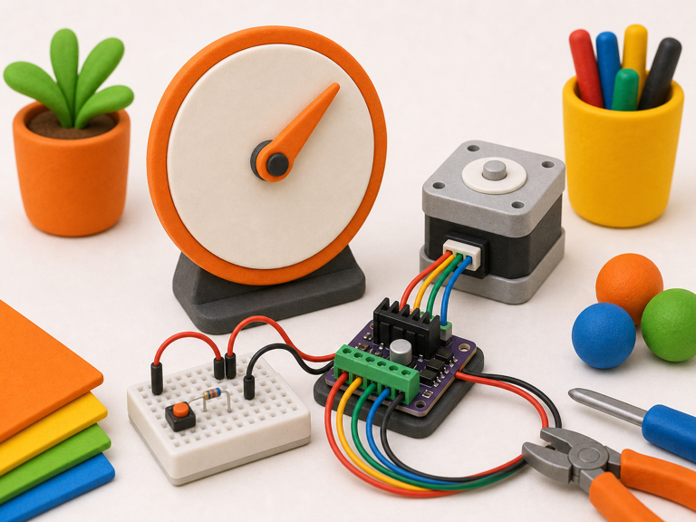
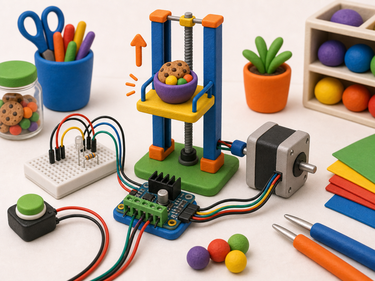

Pointer dial
DetectNew value appears
->
DecidePointer must move
->
DoStep to angle
A stepper motor moves in small controlled steps.
A driver board switches its coils in order, so code can choose direction and position more carefully.
Your projects can use steppers for dials, pointers, lifts, tiny plotters, and slow dramatic reveals.


from gpiozero import OutputDevice
coils = [OutputDevice(pin) for pin in (17, 18, 27, 22)]
coils[0].on()from picozero import Stepper
stepper = Stepper((2, 3, 4, 5))
stepper.step(100)